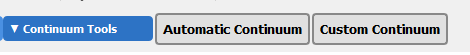
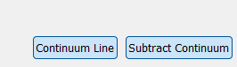
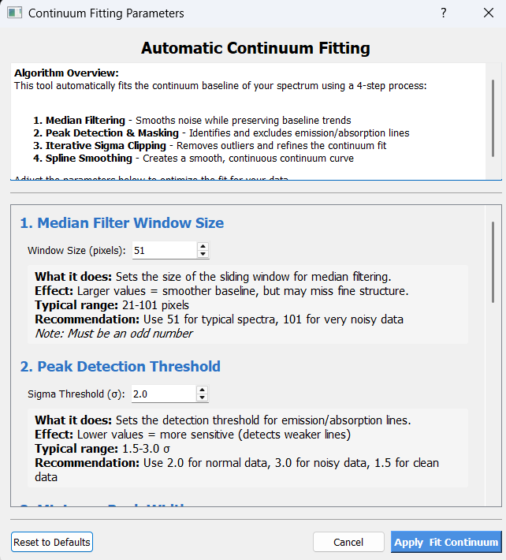
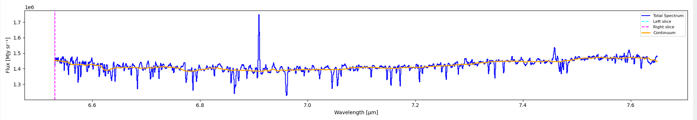
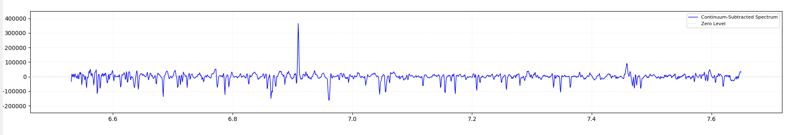
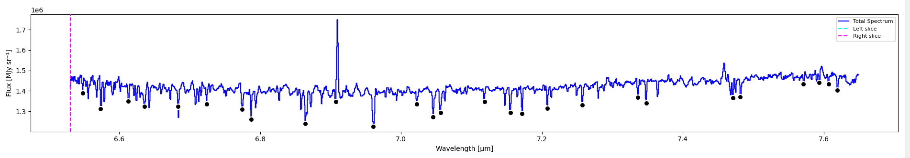
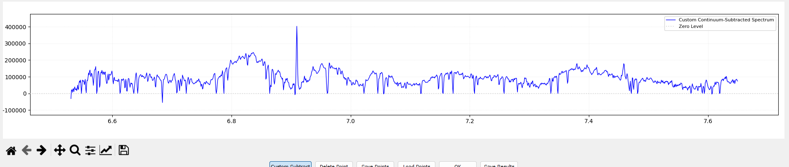
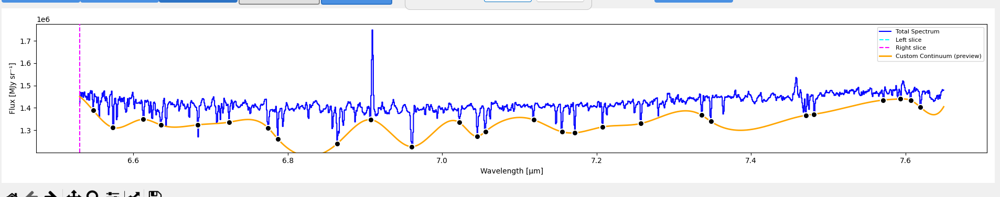

Continuum Subtraction
A “continuum” is the smoothly-varying baseline that underlies the emission and absorption features in your spectrum. Most line-fitting and flux-extraction workflows assume the continuum has been removed first.
IFU Analyzer provides two complementary tools for continuum subtraction:
Automatic Continuum — a 4-step algorithm that fits a baseline without any clicks: median filter → peak detection → iterative sigma clipping → spline smoothing.
Custom Continuum — manual point-and-click placement of anchor points that are then connected with a cubic spline. Use this when the spectrum has unusual shape (broad features, instrumental artefacts, step changes) that defeat the automatic fitter.
You can switch between modes at any time, but only one is “active” at once. A confirmation dialog appears if you switch while progress exists in the other mode, so you don’t lose work by accident.


When to use which mode
Spectrum characteristic |
Best mode |
|---|---|
Smooth, monotonic continuum, narrow lines |
Automatic (default parameters usually work) |
Many lines, but baseline still smooth |
Automatic with looser peak detection (sigma ≈ 1.5) |
Broad emission with shallow wings |
Automatic with larger |
Strong instrumental artefacts (steps, dips) |
Custom — automatic can’t model discontinuities |
Sparse, well-isolated line-free regions |
Custom — fastest, places ~5 anchor points |
Unusual baseline shape (curved, wavy) |
Custom — fit only where you have signal-free data |
Automatic Continuum
Activating the mode
Click the Automatic Continuum toggle button in the GUI’s continuum panel. Two additional buttons appear underneath:
Continuum Line — fits the continuum and overlays it (in orange) over the original spectrum, without changing the data.
Subtract Continuum — applies the fitted continuum, replacing the displayed spectrum with the continuum-subtracted version.


The split into two steps is intentional: you fit and preview, then decide whether to apply.
Fitting the continuum
Click Continuum Line. The Continuum Parameters dialog opens with seven tunable parameters and an algorithm overview:


Parameter |
Default |
What it does |
|---|---|---|
Median Filter Window Size |
51 pixels |
Sliding window for the first-pass continuum estimate. Larger → smoother baseline, but may miss fine structure. Must be odd. |
Peak Detection Threshold (σ) |
2.0 |
Detection cutoff for emission/absorption lines. Lower → more sensitive; use 1.5 for very clean data, 3.0 for noisy data. |
Minimum Peak Width |
1 pixel |
Minimum width for a feature to count as a peak. Filters out noise spikes and very narrow artefacts. |
Minimum Peak Separation |
3 pixels |
Minimum distance between detected peaks. Prevents the algorithm from finding multiple peaks in the same feature. |
Peak Exclusion Zone |
3 pixels |
Number of pixels on each side of a detected peak that are masked before the final fit. Use larger values for broad lines. |
Outlier Removal Iterations |
2 |
How many sigma-clipping passes to run after the first fit. More iterations → cleaner baseline but slower. |
Spline Smoothing Factor |
5 |
Controls how smooth the final spline is. Lower → closer to the
data; higher → smoother curve. |
Click Reset to Defaults at any point to restore all seven values. Click Apply & Fit Continuum to run the algorithm. The fitted curve appears in orange over the original spectrum:

If you don’t like the fit, click Continuum Line again to reopen the dialog with your last parameters and try different settings.
Applying the subtraction
Once you’re happy with the preview, click Subtract Continuum. The displayed spectrum is replaced with the continuum-subtracted version (orange curve subtracted from the original). The y-axis rescales automatically so the now-near-zero baseline is visible alongside the line peaks.
A guard prevents double-subtraction: if you click Subtract Continuum twice in the same session, the second click is ignored — there’s nothing to subtract.


Behind the scenes
The algorithm runs in 4 steps:
Median filter of width
window_sizeproduces a first-pass continuum estimate.Peak detection using
scipy.signal.find_peaksfinds features abovesigma_threshold × RMSwith the given width and distance constraints.Peak masking sets a region of width
peak_exclusionaround every detected peak to be ignored, then the median filter is re-applied to the masked data.Iterative sigma clipping (
iterationspasses) removes outliers above the running continuum estimate.Spline smoothing fits a
UnivariateSpline(k=3) with smoothing parameters = N / smoothing_factorto the cleaned continuum.
The result is stored as a 1D array the same length as the wavelength axis and overlaid in orange before subtraction.
Custom Continuum
Activating the mode
Click the Custom Continuum toggle. Five additional buttons appear:
Custom Subtract — enter point-placement mode.
Delete Point — toggle delete mode (click points to remove them).
Save Points — export the current anchor points to a CSV file.
Load Points — re-import previously-saved anchor points.
OK — fit the spline and preview the result.
The unified Save Results button (shared with Automatic mode) writes the full subtraction result to disk and is available as soon as a continuum has been fitted in either mode.
Switching to Custom while Automatic progress exists prompts a confirmation dialog. Confirming clears the automatic state — you start fresh.
Placing anchor points
Click Custom Subtract to enter placement mode.
Click directly on the spectrum at line-free regions where you want the continuum to pass through. Each click adds a point; the point snaps to the nearest data value so it sits exactly on the curve.
Aim for at least 3 points (mathematical minimum for a cubic spline). For most spectra, 5–10 well-spread points produce excellent fits.


Editing the points
Move a point — click and drag a placed point.
Delete a single point — click Delete Point (it toggles on) then click the point you want to remove. Click Delete Point again to exit delete mode.
Clear all — switch to Automatic Continuum and back; the confirmation dialog gives you the option to clear progress.
Saving and loading point sets
Reusable point sets are saved as a simple CSV. This is handy when you have many similar cubes and want to apply the same continuum strategy to all of them.
Save Points prompts for a filename and writes:
# Wavelength, Flux
3.0000e-06, 1.2345e-02
3.5000e-06, 1.2378e-02
4.0000e-06, 1.2412e-02
Load Points reads the same format. Lines starting with # and
blank lines are ignored. Loading replaces the current point set; it
doesn’t append.
Previewing and confirming
Click OK when you’ve placed all the points you want. The fitter:
Sorts the points by wavelength.
Fits a cubic spline with
bc_type='natural'(no enforced slope at endpoints).Evaluates the spline at every wavelength channel.
Displays the result in orange over the original spectrum.
Opens a confirmation dialog: “The fitted continuum is shown in orange. Subtract it from the spectrum?”
Clicking Yes subtracts the fitted curve and replaces the displayed spectrum. Clicking No keeps the orange preview but doesn’t subtract — you can keep tweaking points and click OK again.


After subtraction, the spectrum y-axis rescales so the subtracted curve is visible. The Save Results button becomes the recommended way to export everything (see saving-the-fitted-continuum below).


Saving the results
A single Save Results button writes everything you need to disk: the original spectrum, the fitted continuum, and the continuum-subtracted spectrum, all in one tab-delimited ASCII file.
Output format
# Results Export from Cube Explorer
# Instrument: MIRI
# Type: full_results
# Wavelength unit: micron
# Flux unit: MJy/sr
#
# Wavelength (micron) Original Continuum Subtracted
6.530400e+00 1.420169e+06 1.450957e+06 -3.078756e+04
6.531200e+00 1.468611e+06 1.448846e+06 1.976483e+04
...
Four columns:
Wavelength — in the unit reported by the FITS header.
Original — the spectrum before any subtraction was applied.
Continuum — the fitted continuum (smooth baseline).
NaNif no continuum has been fitted yet.Subtracted —
Original − Continuum.NaNif no continuum has been fitted.
The Subtracted column always equals Original − Continuum to
machine precision. This is true whether or not you actually clicked the
Subtract button — the file always lets you reconstruct both the original
and the subtracted spectrum.
Reusing the continuum from the command line
The saved continuum is compatible with the CLI’s subtract-continuum
tool, but the CLI expects a file with header # Type:
fitted_continuum. To reuse a continuum exported by the GUI, you have
two options:
Extract the continuum column. Open the results file in your favourite tool, drop the Original and Subtracted columns, change the header line to
# Type: fitted_continuum, and save.Use the CLI’s own auto-continuum. For batch processing of many cubes, it’s usually faster to run
clip.py auto-continuumonce per cube and pipe its output intosubtract-continuum. See Command-Line Interface for the workflow.
Recovery and resets
The continuum panel tracks two independent kinds of state:
Automatic progress — whether a fit exists, whether the preview is shown, whether subtraction has been applied.
Custom progress — whether the placement session is active, whether points exist, whether subtraction has been applied.
If you toggle between modes, the active mode’s progress is preserved and the other mode’s progress is cleared (after a confirmation dialog). This means:
You can switch from Automatic to Custom without losing your automatic fit until you confirm the clear.
After a subtraction has been applied, the original spectrum is backed up internally. Subsequent operations re-fit against the backup, not the already-subtracted spectrum, so you can iterate safely.
Common issues
The fit looks high (overshoots into line peaks)
Increase Peak Detection Threshold (try sigma = 1.5) so more
peaks are detected and masked. Or increase Peak Exclusion Zone so
the wings of broad lines are also excluded from the fit.
The fit looks low (cuts into the continuum between lines)
Decrease Spline Smoothing Factor to let the fit follow the data more closely. Or decrease Outlier Removal Iterations to 1.
The fit has wiggles where the data is featureless
Increase Spline Smoothing Factor (try 10 or 20) for a
smoother spline. Or increase Median Filter Window Size to 101.
Custom subtract complains “Place at least 3 points”
A cubic spline needs at least 3 anchor points. Click on three or more line-free regions of the spectrum.
I want to revert to the original spectrum
Toggle the active mode off, then on again. The continuum panel automatically restores the backup of the original spectrum when you start a new session.
See also
Gaussian Fitting — the next step after continuum subtraction for most workflows.
Command-Line Interface —
auto-continuum,custom-continuum, andsubtract-continuumcommand-line equivalents for batch processing.Exporting Data — full reference for all spectrum/continuum export formats.